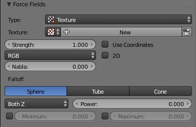

纹理¶
纹理力场。
您可以使用 纹理 力场来创建任意复杂的力场，这三个方向的力被颜色编码。红色编码为X轴，Y轴为绿色，Z轴为蓝色（如3D视图中坐标轴的颜色）。值0.5表示没有力，大于负轴方向0.5加速度（如-Z）的值，小于正轴方向0.5加速度（如+ Z）的值。
选项¶

用于纹理力场的UI。
- 贴图类型
这设置了一个力向量从纹理派生的方式。
- RGB
- 将颜色成分直接用作颜色编码方向的力矢量分量。您需要RGB纹理，例如图像或色带。所以没有色带的混合纹理是不够的。
- 梯度渐变
- 将力矢量计算为纹理强度（灰度）的3D梯度。梯度矢量总是指向增加亮度的方向。
- 卷曲
- 从3D-RGB纹理的卷曲计算力矢量（RGB矢量的旋转）。这也只适用于颜色纹理。它可以用于创建一个漂亮的湍流力与颜色云纹理与佩林噪音。
- 纳布拉
- 它是用于计算 渐变 和 卷曲 纹理模式所需的偏导数的偏移量。
- 使用坐标轴
- 使用发射器对象坐标（和旋转和缩放）作为粒子使用的纹理空间。允许移动力场，它们的坐标与对象的位置坐标相结合。
- 根纹理坐标
- 这对于头发是有用的，因为它使用为发束的所有部分的颗粒根位置计算的纹理力。
- 2D
- 所述 2D 按钮无视颗粒z坐标和仅使用颗粒X和Y作为纹理坐标。
记住只有程序纹理才是真正的3D。
例子¶
- 单色纹理（0.5,0.0,0.5）在正Y轴的方向上产生一个力，例如头发定向到Y轴。
- 可以使用具有色带的混合纹理来创建力“平面”。例如在左侧（0.5,0.5,0.5），在右侧（1.0,0.5,0.5），您有一个垂直于XY（即平行于Z）的力平面。如果使用坐标对象，可以使用对象来推送粒子。
- 动画木质纹理可以用来产生像运动一样的波浪。